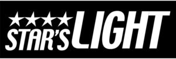

Trade Mark Journal No.2025/010 7 March 2025
WO0000001839908 (6,7,9,11)
Office of origin: Italy
Date of International Registration:13 November 2024
Date of designation in the UK:
13 November 2024

The trademark consists of an imprint depicting the fanciful wording STAR'S LIGHT in fancy characters wherein the word LIGHT is larger in size and above the word STAR'S there are four stylized stars.
International priority date claimed: 2 July 2024
(Italy)
(302024000106735)
- Class 6
- Bells; common metals and their alloys, ores; metal materials for building and construction; transportable buildings of metal; non-electric cables and wires of common metal; small items of metal hardware; metal containers for storage or transport; safes.
- Class 7
- Yarn winding machines; machine tools, power-operated tools; motors and engines, except for land vehicles; machine coupling and transmission components, except for land vehicles; agricultural implements, other than hand-operated hand tools; incubators for eggs; automatic vending machines.
- Class 9
- Power adapters; socket adaptors; bells [warning devices]; electronic wirelessly enabled door bells; alarm bells, electric; plug adaptors; plug connectors; electrical plugs and sockets; warning lights [flashing beacons]; emergency warning lights; rotating signalling lights; electric sockets; electrical outlet plates, shaped; electric outlets incorporating timers; scientific, research, navigation, surveying, photographic, cinematographic, audiovisual, optical, weighing, measuring, signalling, detecting, testing, inspecting, life-saving and teaching apparatus and instruments; apparatus and instruments for conducting, switching, transforming, accumulating, regulating or controlling the distribution or use of electricity; apparatus and instruments for recording, transmitting, reproducing or processing sound, images or data; recorded and downloadable media, computer software, blank digital or analogue recording and storage media; mechanisms for coin-operated apparatus; cash registers, calculating devices; computers and computer peripheral devices; diving suits, divers' masks, ear plugs for divers, nose clips for divers and swimmers, gloves for divers, breathing apparatus for underwater swimming; fire-extinguishing apparatus.
- Class 11
- Light-emitting diode [LED] light bulbs; downlights; light-emitting diode [LED] luminaires; desk lamps; floor lamps; electric lamps; solar lamps; motion sensitive security lights; safety lamps; LED safety lamps; fibre optic lighting apparatus; wall lights; lamps for outdoor use; book lights; fluorescent lamps; lamp reflectors; oil lamps; standard lamps; chandeliers; lamp bulbs; light bulbs, electric; fluorescent light bulbs; light-emitting diode [LED] lights; fairy lights; reading lights; oil lanterns; electric lanterns; candle lanterns; lanterns for lighting; flameless light emitting diode [LED] candles; LED flashlights; electric torches; rechargeable lanterns; solar powered torches; apparatus and installations for lighting, heating, cooling, steam generating, cooking, drying, ventilating, water supply and sanitary purposes.
EUROSPIN ITALIA S.P.A.
Representative: Dr. Modiano & Associati SpA, Via Meravigli 16, I-20123 Milano, ITALY